Jimmy Donaldson(MrBeast) word geboren.
MrBeast begint zijn youtube kanaal.
Mrbeast leest het woordenboek in een zitting uit, waardoor zijn kanaal viral gaat. Hierna begint hij meer videos te maken waar hij dingen doet die heel lang duren(zoals tot 100.000 tellen).
Reading The Entire Dictionary In One Sitting
MrBeast uploadde die dag zijn eerste video waarin hij geld weggaf. Hij gaf dit aan een dakloze man. De sponsor wou hem eerst maar $5000 euro geven, maar MrBeast heeft 2 uur lang blijven smeken om 10.000$ te krijgen omdat hij dat beter vond voor de titel en de video dan beter bekeken zou worden. De video heeft nu meer dan 10.000.000 views. Vanaf deze video werd het dus ook een ding dat hij geld weggaf en ging hij dat vaker doen.
Giving A Random Homeless Man $10,000

Chandler is voor het eerst gezien in een video. Eerst was hij een schoonmaker maar MrBeast nodigte hem uit om een keer mee te doen. De fans vonden hem heel erg grappig en daarom zat hij vanaf toen bij het MrBeast team.
Giving A Random Homeless Man $10,000
In deze video geeft MrBeast zijn 3 miljoenste abbonnee 3 miljoen cent. Vanaf hier ging hij dit vaker doen en uiteindelijk haf hij zijn 100miljoenste abbonnee een eiland.
Giving 3,000,000 Pennies To My 3,000,000th Subscriber
I Gave My 100,000,000th Subscriber An Island
Pewdiepie vs T-Series lijkt niks met MrBeast te maken te hebben, maar tijdens deze periode maakte MrBeast veel video's om Pewdiepie te promoten zodat hij de nummer 1 youtube kanaal bleef. Hij kocht taloze billboards en ging hier viral mee.

Beschrijving
Beschrijving
Beschrijving
Beschrijving